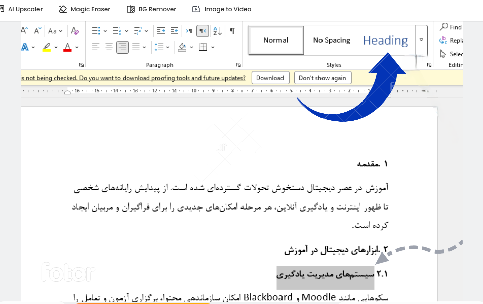
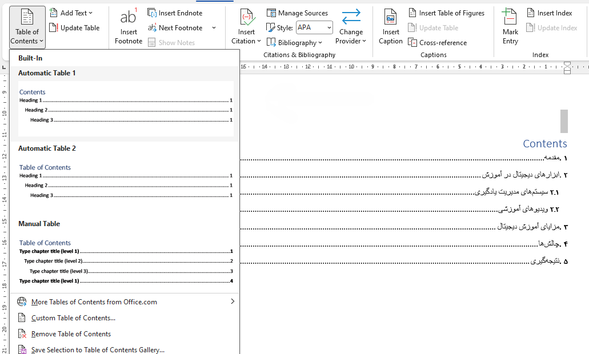
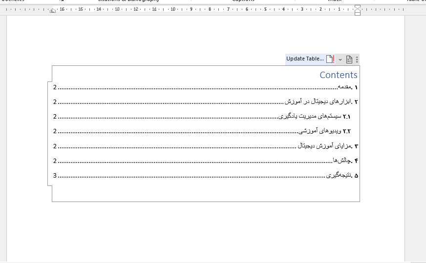
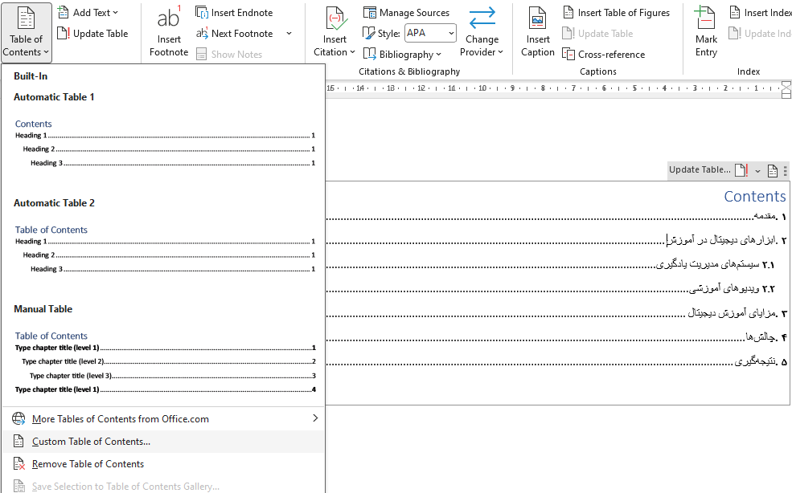
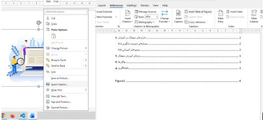

فهرست خودکار چیست؟
فهرست خودکار (Auto Table of Contents) یکی از قدرتمندترین ابزارهای Microsoft Word است که بهطور خودکار
عناوین، شماره صفحات و ساختار سند را سازماندهی میکند.
این ابزار نهتنها در زمان شما صرفهجویی
میکند،
بلکه دقت و ظاهر حرفهای به مستندات شما میبخشد.
مزایای استفاده از فهرست خودکار:
-
صرفهجویی در زمان - دیگر نیازی به بهروزرسانی دستی صفحات نیست
-
دقت ۱۰۰٪ - هیچگونه اشتباه انسانی در شمارهگذاری
-
حرفهایتر شدن سند - ظاهر منظم و استاندارد
-
قابلیت کلیک - انتقال سریع به بخش مورد نظر با یک کلیک
-
بهروزرسانی خودکار - با هر تغییر در سند، فهرست بهطور خودکار بهروز میشود
کاربردهای اصلی:
-
پایاننامههای دانشگاهی
-
گزارشهای کاری و پروژهها
-
کتابها و مستندات طولانی
-
مقالههای تحقیقاتی
مرحله اول: اعمال استایلهای عنوان
- متن مورد نظر را که میخواهید عنوان باشد انتخاب کنید
- از تب Home به بخش Styles بروید
- متن را به ترتیب به Heading 2، Heading 1 یا Heading 3 تبدیل کنید

مرحله دوم: درج فهرست خودکار
- نشانگر ماوس را به محل مورد نظر برای قرارگیری فهرست ببرید
- به تب References بروید
- روی Table of Contents کلیک کنید
- یکی از قالبهای از پیش تعریف شده را انتخاب کنید

مرحله سوم: بهروزرسانی فهرست
- روی فهرست ایجاد شده کلیک راست کنید
- گزینه Update Field را انتخاب کنید
- Update entire table را بزنید تا کل فهرست بهروز شود

مرحله چهارم: شخصیسازی فهرست
- روی فهرست کلیک کنید
- به تب References → Table of Contents → Custom Table of Contents بروید
- تعداد سطوح نمایش، طرح نقطهگذاری و فرمت ظاهری را تنظیم کنید

مرحله پنجم: ایجاد فهرست تصاویر و جداول
- روی تصویر یا جدول مورد نظر کلیک راست کنید
- Insert Caption را انتخاب کنید
- به تب References بروید
- Insert Table of Figures را بزنید
